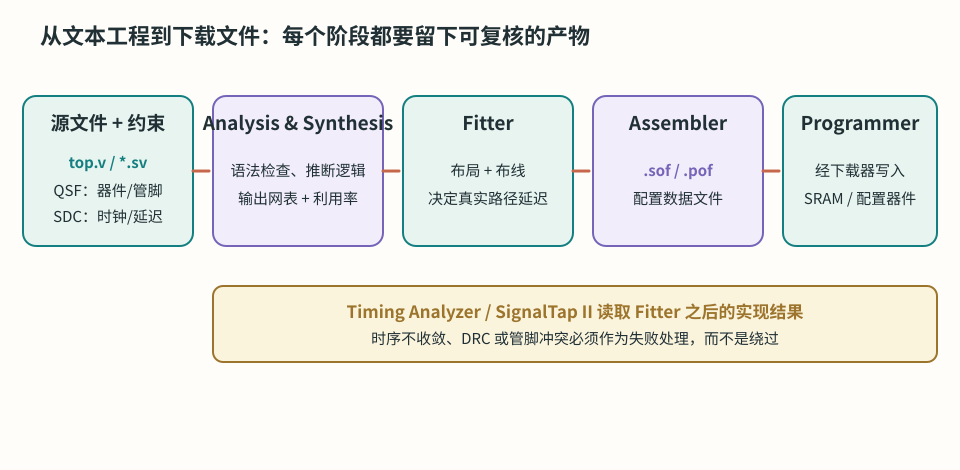
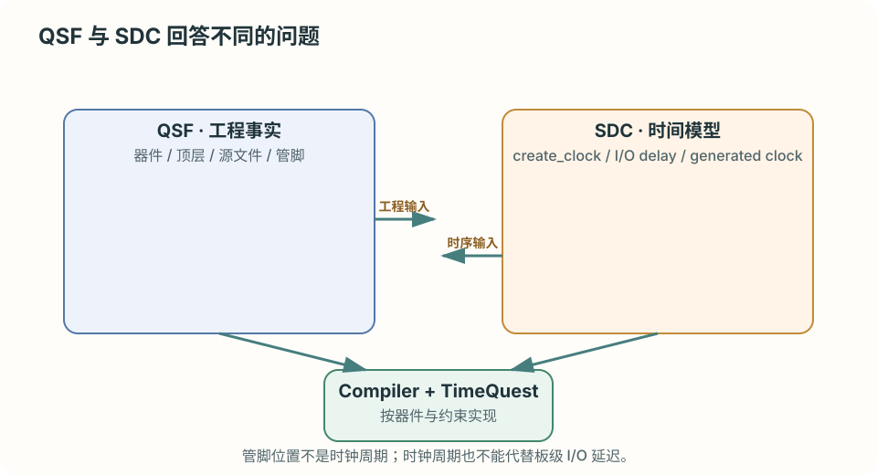
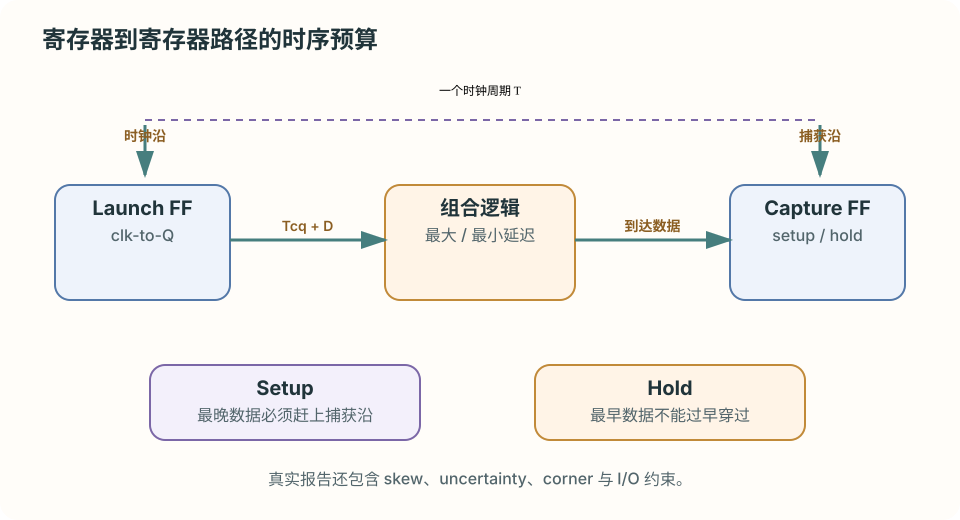

Quartus Prime：从 QSF/SDC 到 Fitter 与 TimeQuest
理解 Quartus 工程配置、完整编译链路、时序约束和报告证据；从一个不猜管脚的可复现 Tcl 项目开始。
01 / 为什么 Quartus 显示 100% 完成，设计仍可能不能工作？
FPGA 工程不是把 RTL 文件交给编译器就结束。工具必须知道目标器件、顶层模块、管脚分配和时钟要求，才能把逻辑映射到具体芯片。缺少这些信息时，“编译完成”可能只代表某些编译阶段完成，并不能证明时序满足或板卡连接正确。

Altera Quartus Prime 的 Compiler 可以执行完整编译，也可以分阶段运行和保留中间结果。以 Pro Edition 的文档为例，完整流程包括综合、Fitter、时序分析和生成器件编程文件；其他 Edition、器件系列与版本的功能范围需要按对应发布说明核对。Quartus Prime 编译流程。
必须分开回答三个问题：综合是否成功？实现后的 setup/hold 是否满足约束？下载到目标板之后，电气连接、时钟、复位和外设行为是否正确？这三类证据不能互相替代。
02 / QSF 和 SDC：器件配置与时序模型

| 文件 | 典型内容 | 不能替代什么 |
|---|---|---|
.qpf | 工程与 revision 入口 | 不是完整设计输入清单 |
.qsf | 器件、顶层、RTL 源、IP、管脚和 I/O 标准分配 | 不能代替时钟周期和外部延迟 |
.sdc | create_clock、generated clock、input/output delay、例外 | 不能决定封装管脚和 I/O 电平 |
例如，50 MHz 的时钟周期是 20 ns，但这并不告诉工具输入数据从外部芯片到 FPGA 管脚需要多久，也没有说明输出到外部接收芯片的 setup/hold 预算。管脚、电压标准、银行电压和 PCB 时序必须来自确切的开发板原理图与器件手册。
# base.sdc — 仅作 50 MHz 教学假设
create_clock -name board_clk -period 20.000 [get_ports {clk}]
# 真实接口还需要从外部器件数据手册和 PCB 走线推导：
# set_input_delay -clock board_clk -max ...
# set_input_delay -clock board_clk -min ...
# set_output_delay -clock board_clk -max ...
# set_output_delay -clock board_clk -min ...QSF 还存在设置优先级：命令行选项、QSF、工程数据库和工具默认值并非等价来源。构建脚本必须把关键参数写进可审查的工程文件，避免只在 GUI 中临时改动后没有导出设置。Altera 设计约束概述 与 设置优先级。
03 / Analysis & Synthesis、Fitter、TimeQuest 和 Assembler 分别做什么？
Analysis & Synthesis：分析 HDL、展开层次、推断逻辑资源并生成综合网表。这里看到的 LUT/寄存器/存储器估计，不是最终布线后时序的保证。
Fitter：把逻辑映射到目标 FPGA 的具体资源位置，完成布局与布线。器件架构、管脚限制、时钟资源、拥塞和实现设置都会影响结果。
TimeQuest：根据 SDC 与器件时序模型检查数据路径和时钟关系。若时钟或 I/O 约束缺失，报告中的“没有负 Slack”可能只是因为关键路径没有被正确分析。
Assembler：生成目标器件所需的配置文件。常见文件扩展名与配置模式、器件家族有关；不能把所有器件的 .sof、.pof 和 Flash 镜像视为同一种产物。
# 从 Quartus 命令行执行完整编译（工程和 revision 必须先存在）
quartus_sh --flow compile build/quartus/fpga_lab -c rev_a
# Tcl shell 中也可以：
load_package flow
execute_flow -compile官方 Tcl 流程说明 execute_flow -compile 会导出工程分配并调用对应编译阶段；这比手工依次调用底层可执行文件更不容易漏掉工程设置导出步骤。Quartus Tcl 完整编译示例。
04 / TimeQuest：先确认时钟被识别，再读 Slack

一个简单 SDC 至少要定义外部时钟：
create_clock -name sys_clk -period 10.000 [get_ports {clk}]
report_clocks
check_timing对 PLL 输出的时钟，需要确保派生时钟被正确识别。Altera 文档提供 derive_pll_clocks，但不同器件系列和 IP 的自动派生能力不同；不要把它当成对所有 Quartus 设计都必须无条件复制的一行命令。官方 PLL 时钟约束说明。
报告审查顺序建议是：时钟是否都存在且周期正确；输入输出端点是否被约束；是否有 unconstrained path；最坏 setup/hold 路径的起点、终点、数据路径和时钟路径；例外是否真的符合协议与设计意图。只有在约束完整的前提下，WNS/TNS 才有意义。
05 / 实验：生成一个不伪造管脚的 Quartus 工程
本仓库提供 examples/quartus/led_counter.v、base.sdc 和 Tcl 工程生成脚本。脚本要求明确提供器件家族和完整 part 编号，不假定某块开发板使用哪个器件，也不硬编码任何管脚。
export FPGA_FAMILY="<从器件手册确认的家族名>"
export FPGA_DEVICE="<完整器件型号、封装和速度等级>"
quartus_sh -t examples/quartus/create_project.tcl
quartus_sh --flow compile build/quartus/fpga_lab -c rev_abase.sdc 假设 50 MHz 时钟，仅用于演示。工程没有板卡管脚和 I/O 标准分配，不能把生成的配置文件直接下载到开发板。真实板卡实验必须先加入经核对的管脚约束，再审查 Fitter、TimeQuest 和 DRC 报告。
为什么不能把 Quartus GUI 中修改的时钟约束当作已经写入 SDC？
Timing Analyzer 的 GUI 修改作用于当前时序数据库，不一定自动写回项目的 SDC 文件。要将约束纳入可复现工程，需要显式保存或导出 SDC，并在干净构建中重新加载验证。